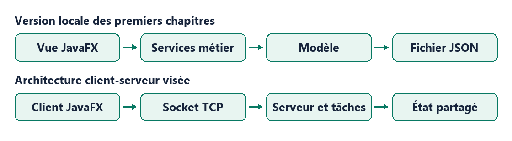
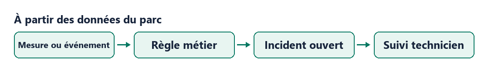

Comprendre le projet NetMonitor
1. Partir d’une application locale, puis la faire communiquer
NetMonitor doit enregistrer le parc, suivre son état et aider les techniciens à traiter les incidents. Les premiers chapitres posent le modèle et la persistance locale. Le cours JavaFX et TCP prépare une architecture où plusieurs clients peuvent consulter ou modifier un même parc via le serveur.

La supervision observe un équipement depuis un point de mesure. Un état DOWN peut refléter une panne, un chemin inaccessible ou une mesure manquante selon la règle retenue. Définis la règle avant d’interpréter un tableau de bord. Le premier modèle peut partir de mesures simulées. Indique explicitement quelles données sont simulées et comment elles sont collectées ensuite.
2. Organiser les classes et leurs relations
Un NetworkDevice représente un appareil identifié de manière stable. Un Measurement associe une valeur horodatée et une unité à un équipement. Un Event décrit un changement observé. Un Incident est un problème que quelqu’un peut prendre en charge. Un User porte un rôle et peut recevoir une affectation selon les règles du projet.
Le diagramme demandé peut montrer un équipement relié à plusieurs mesures ou incidents, chacun renvoyant à cet équipement. Distingue état de l’appareil et état de l’incident. Une machine peut redevenir joignable alors que le technicien termine encore le diagnostic de son incident.

3. Séparer les règles du stockage
Un service métier valide un ajout, cherche les doublons et contrôle les changements d’état. Il peut être appelé par la fenêtre ou, plus tard, par le serveur. Une couche de stockage enregistre ensuite le résultat. Avec JSON, conserve les identifiants pour relier les mesures, les incidents et les équipements au rechargement. Avec JDBC, on change la manière de stocker et d’interroger les données.
Fichier absent au premier lancement et fichier existant invalide sont deux cas différents. Pour le premier, on peut démarrer avec un état vide. Pour le second, signale l’erreur en conservant l’ancienne copie. Vérifie qu’un redémarrage retrouve tant les valeurs que leurs relations.
4. Authentifier, autoriser et afficher
L’authentification dit qui est connecté. L’autorisation contrôle les actions de cet utilisateur. Une vue JavaFX peut masquer les actions interdites. Le service qui exécute l’action vérifie aussi le rôle, surtout si un client réseau peut appeler la même opération. La matrice du sujet est un exemple à compléter pour les états d’incident et les droits de clôture.
Le tableau de bord calcule à partir des objets le total d’appareils, les états UP, WARNING et DOWN, ainsi que les incidents ouverts. Une table et un graphique doivent se mettre à jour à partir de la même donnée. Vérifie le cas d’un parc vide et celui d’un appareil qui change d’état.
5. Lire et écrire sur une socket
Le serveur ouvre un ServerSocket et attend dans accept(). Le client ouvre une Socket vers l’adresse et le port. Après acceptation, chacun possède une extrémité capable de lire et d’écrire. TCP transmet un flux d’octets ordonné. Si l’exemple du cours choisit une ligne par requête, le client doit envoyer la fin de ligne et vider le tampon pour que readLine() puisse terminer.
Définis qui parle en premier, à quoi ressemble une commande et comment le serveur répond à une commande inconnue. Par exemple, LIST et OK sont une convention possible à définir dans le projet. Ne pars pas du principe que l’API TCP impose une forme de message.
6. Gérer plusieurs clients sans bloquer la fenêtre
Si le premier client bloque en lecture et si la boucle d’accueil le traite elle-même, le deuxième ne peut pas être pris en charge. Le cours propose une tâche par connexion, par exemple déléguée à un ExecutorService. La boucle d’accueil revient aussitôt attendre une autre socket. Quand deux tâches modifient le même état, protège les opérations combinées comme « vérifier puis ajouter ».
JavaFX a son propre fil d’exécution pour l’interface. Fais les lectures réseau en arrière-plan et applique ensuite le résultat sur le fil JavaFX avec Platform.runLater. Contrôle aussi les erreurs et fin de connexion, pour que la fermeture d’un client ne ferme pas le serveur. Documentation de Platform.runLater
Comment prouver que le parc a effectivement été sauvegardé ?
Exemple de recette : crée deux équipements distincts, sauvegarde le parc puis ferme complètement l’application. Rouvre-la, charge le fichier et retrouve les deux identifiants avec leurs propriétés. Le redémarrage élimine la possibilité de relire simplement les objets restés en mémoire.
Modifie ensuite un seul équipement et recommence. L’autre doit garder sa valeur. Ce second essai détecte une sauvegarde qui écraserait tout le parc avec le dernier objet traité.
Sigles et acronymes
- API · Application Programming Interface
- Interface entre programmes.
Exemple. Ton client demande à une API la liste des messages sans avoir à lire la base de données. - JDBC · Java Database Connectivity
- Interface Java d’accès aux bases de données.
Exemple. Une application Java utilise JDBC pour lire un résultat SQL. - JSON · JavaScript Object Notation
- Format texte de données structurées.
Exemple. Une API renvoie un utilisateur sous la forme d’un objet avec nom et identifiant. - SQL · Structured Query Language
- Langage de requête pour une base relationnelle.
Exemple. SELECT permet de lire les titres des films d’une catégorie. - TCP · Transmission Control Protocol
- Transport des données avec suivi des échanges et retransmission.
Exemple. Les routeurs BGP établissent une session TCP avant d’échanger leurs annonces. - UML · Unified Modeling Language
- Langage de modélisation de logiciels.
Exemple. Un diagramme de classes montre les liens entre Client et Message.
Du cours aux TD et TP
| Notion | Où la travailler | À savoir refaire |
|---|---|---|
| Supervision et cahier des charges | Sujet ch. 1–4 | Justifier les fonctionnalités avec des critères de test. |
| Modèle et persistance | Sujet ch. 5–6 | Modéliser les cardinalités et retrouver la collection après redémarrage. |
| Droits et statistiques | Sujet ch. 7–8 | Tester deux rôles et recalculer le tableau de bord après une modification. |
| TCP et tâches | Poly Sockets et JavaFX | Définir un échange, faire répondre deux clients et mettre à jour la vue sans la bloquer. |
Questions TD & TP
Sujet ch. 4 · Écrire un cahier des charges que tu peux tester
Énoncé. Détailler la gestion du parc, des utilisateurs et des incidents, l’interface, la persistance et la robustesse.
- Pour chaque fonctionnalité, note l’acteur, l’action, les conditions et le résultat visible. Exemple : un administrateur valide un équipement doté d’un identifiant libre, puis retrouve l’objet dans la liste.
- Ajoute un cas d’échec par action sensible : doublon, données invalides, rôle non autorisé, fichier illisible. Indique quel message et quel état restant permettent de vérifier l’échec.
- Lie le critère de persistance à un redémarrage et celui du tableau de bord à une modification d’état qui change le compteur.
Sujet ch. 5 · Construire l’UML et les opérations locales
Énoncé. Modéliser utilisateur, équipement, incident, événement et mesure puis ajouter, retirer, modifier, rechercher et lister des équipements.
- Dans l’UML, dessine un équipement avec un identifiant stable et ses liens 1–n avec les mesures et les incidents. Fais préciser par le modèle qui peut prendre un incident et si une affectation peut rester vide.
- Donne les actions d’ajout et de recherche au service. Passe-lui les données de la vue, impose l’unicité de l’identifiant et vérifie que renommer l’appareil laisse son historique rattaché au même objet.
- Teste l’objet absent et le doublon. Lors d’une suppression, choisis et documente la règle sur les mesures et incidents liés. Vérifie qu’aucune référence impossible n’est sauvée.
Sujet ch. 6 · Sauvegarder et relire le parc
Énoncé. Proposer un format structuré, conserver les données entre deux exécutions et gérer l’absence ou l’inaccessibilité du stockage.
- Dans le JSON, conserve les champs propres à l’équipement une fois. Dans un incident, référence son identifiant. À la lecture, reconstruis ces liens et vérifie les identifiants requis.
- Sur un dossier de test, ajoute deux appareils et un incident, ferme puis relance. Compare les valeurs et le lien vers le bon appareil. Le nombre d’objets ne doit pas doubler après ouverture.
- Place ensuite un JSON invalide sur une copie. Vérifie le message et l’absence d’écrasement. Si l’écriture échoue après modification, annonce que les données restent en mémoire ou refuse la modification, selon le comportement que tu as choisi et documenté.
Sujet ch. 7–8 · Tester les deux rôles et les chiffres de JavaFX
Énoncé. Authentifier les utilisateurs, leur proposer les actions qui correspondent à leur rôle et calculer les chiffres du tableau de bord à partir des données.
- Avec un administrateur, crée un équipement. Avec un technicien, vérifie qu’il apparaît dans la liste et que l’action administrative est refusée. Fais séparément le test d’affectation d’un incident selon la matrice retenue.
- Charge trois appareils, un dans chaque état. Le tableau donne 3 au total et 1 dans chaque état. Fais passer
DOWNversUP. Le total reste 3,UPpasse à 2 etDOWNvaut 0. - Crée un incident ouvert et un fermé. Vérifie le compteur ouvert et le graphique par gravité à partir de la même collection. Pour une interface en réseau, déclenche la mise à jour sur le fil JavaFX une fois les données reçues.
Application du cours · Vérifier un serveur à deux clients
Exercice appliqué au cours. Reprendre le serveur du poly et vérifier que le client JavaFX peut échanger en TCP même pendant l’attente d’un autre client.
- Pars en boucle locale avec un port de test. Sur le serveur, conserve une boucle
accept()et envoie chaque socket acceptée à une tâche dédiée. - Fais connecter A sans rien lui faire écrire. B doit pouvoir envoyer une commande complète, vider son tampon et obtenir une réponse. Fais fermer A puis rejoue B.
- Si B reste bloqué, sépare le délai de connexion du délai de lecture. Vérifie le port, la tâche côté serveur, la fin de ligne et le
flush. Garde le cas de test et le comportement observé, puis recommence depuis JavaFX en laissant la fenêtre réactive.